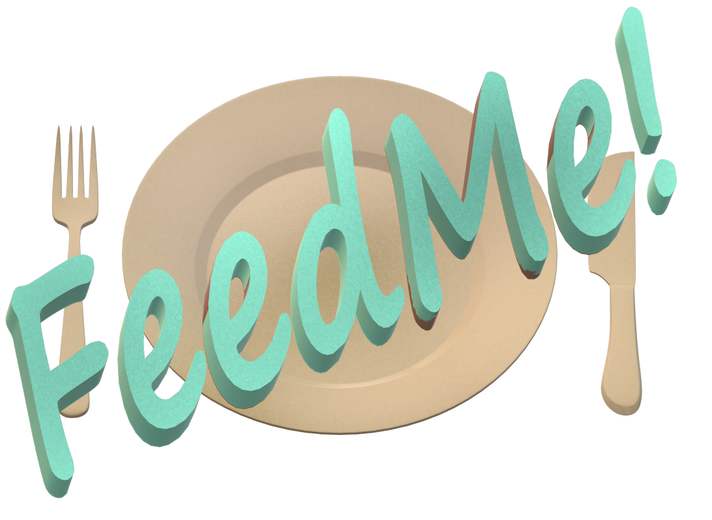

<nav class="navbar navbar-expand-sm fixed-top">
  <div class="container-fluid">

      
   
    <ul class="navbar-nav navbar-light">
      <div style="margin: 20px 20px;"></div>
      <li class="nav-link">
        <a routerLink="/feed-me-later" routerLinkActive="active">FeedMe Later</a>
      </li>
      
      <li>
        <button type="button" title="This button takes you back to the Home page." class="home-page-btn" routerLink="/" routerLinkActive="active" [routerLinkActiveOptions]="{exact:true}">Home</button>
      </li>

      <ng-container *ngIf="!userInfo; else createLayoutsTemplate">
        <li class="nav-link nav-feedme-now">
          <a routerLink="/feed-me-now" routerLinkActive="active" title="This button takes you to the FeedMeNow page where meal descisions can be made for you." >FeedMe Now</a>
        </li>
      </ng-container>

      <ng-template #createLayoutsTemplate>
        <li class="nav-dropdown">
          <div class="btn-group">
            <button type="button" class="main-dropdown-btn" [routerLink]="['/feed-me-now']" routerLinkActive="active" data-title="This button takes you to the FeedMeNow page where meal descisions can be made for you.">FeedMe Now</button>
            <button type="button" class="dropdown-toggle dropdown-toggle-split main-dropdown-btn" data-bs-toggle="dropdown" aria-expanded="false" title="Once logged in this will alow you to choose from previously created layouts with ease.">
              <span class="visually-hidden">Toggle Dropdown</span>
            </button>
            <ul class="dropdown-menu">
              <li *ngFor="let layout of getLayouts; index as i;" class="dropdown-menu-item">
                <ng-container *ngIf="!editingNavbarLayout || editingNavbarLayout.id !== layout.id; else editLayoutTemplate">
                  <a [routerLink]="['/feed-me-now', layout.id]" routerLinkActive="active" class="dropdown-item">{{layout.name}}</a>
  
                  <ng-container *ngIf="i !== 0">
                    <button type="button" class="dropdown-menu-btn">
                      <span class="material-icons" title="Edit Layout" (click)="editLayout(i, $event)">
                        edit
                      </span>
                    </button>
    
                    <button type="button" class="dropdown-menu-btn" (click)="removeLayout(i, $event)">
                      <span class="material-icons" title="Delete Layout">
                        delete
                      </span>
                    </button>
                  </ng-container>
                </ng-container>
  
                <ng-template #editLayoutTemplate>
                  <input class="dropdown-input" [(ngModel)]="edittedLayoutName">
                  <button type="button" class="dropdown-menu-btn" (click)="confirmEditLayout(i, $event)">
                    <span class="material-icons" title="Confirm Edit">
                      check
                    </span>
                  </button>
                  <button type="button" class="dropdown-menu-btn" (click)="cancelEditLayout($event)">
                    <span class="material-icons" title="Cancel Edit">
                      cancel
                    </span>
                  </button>

                </ng-template>
  
              </li>
            </ul>
          </div>

        </li>
        
      </ng-template>
  
      <span class="material-symbols-sharp">
        brightness_5
        </span>  
      <label class="switch">
       <input type="checkbox"  (click)="toggleDarkTheme()">
       <span class="slider round" style="  width: 80px;
       height: 40px; float: right;"></span>
    </label>
     <a class="material-symbols-sharp" style="margin-left: 15px ;">
      dark_mode
     </a>
        
      <app-create-new-layout *ngIf="userInfo" title="This button allows you to &#010;create and save a FeedMe &#010; for any occaision or location."></app-create-new-layout>

      <app-login-signup style= "margin-left: 100px;" title="This will open the register and log-in window, allowing you to create an account where you can save your FeedMe"></app-login-signup>

    </ul>

  </div>
</nav>